拆解兩支影片與三份對照文件，整理成一套可以照著做的背景圖方法。
先看對照實驗投影片 十張自己生的背景，同一句標題壓上去，附機械量測
五句話。後面每一節都是在展開其中一句。
影片裡示範了一個常見的失敗流程：打開生圖工具，輸入「一艘揚起白帆的帆船，在平靜藍色的海面上行駛」，得到一張很好看的圖，然後發現它沒辦法用。
整理出來的三種失敗長相：
反過來說，可用的背景圖要同時滿足四件事：足夠的留白區塊、單一而清楚的視覺主體、可控的明暗對比（讓白字或黑字其中一種一定讀得到）、以及跟簡報主題對得上的敘事張力。
影片裡的原話是「背景圖好看的標準就是具有恢弘感」。我把它拆成上面四項，因為「恢弘感」不能拿來驗收，留白率跟對比度可以。
核心是把主體放進一個不屬於它的宏大情境裡。影片給的定義很精準：尺度失衡指的是失衡，不是宏大。旋轉的風暴已經夠宏大了，畫面卻很無聊；在風暴中心放一艘小小的帆船，故事感立刻出現。
影片示範了同一招套在不同主體上：失重的太空人、躍入銀河的鯨魚、象徵榮譽的獎盃、壓迫到地面的巨型星球、湖面上的巨型之門。共通點是主體被放進遠大於它的容器裡。
還有一個變體：在馬尾巴上綁絲帶，再用擴圖把絲帶跟駿馬的大小比例嚴重拉開，做出視覺上的錯位。這種畫面切換任何配色都好看，因為結構本身就成立。
第二個武器是光。這一招的成本最低，因為它可以直接加在既有的圖上。
影片對「我審美不好，不知道什麼顏色好看」的回答值得記下來：方法對了以後，配色可以隨便換。視覺中心的位置與強度決定畫面好不好看，顏色是後面才決定的事。
示範是一張普通風景照：先做尺度失衡，把月亮放大坐落在山體之間；再加光感，把月亮變成明亮的橙色；最後用運鏡順著月亮游到發光的河流。一張有意境的封面背景就完成了。
這是文件版裡最實用的一份東西。與其把提示詞寫成一長串形容詞，不如固定拆成四段，每段各管一件事，缺哪段補哪段。
| 關鍵點 | 視覺目標 | 中文提示詞塊 | 英文提示詞塊 |
|---|---|---|---|
| ① 留白充足 | 畫面乾淨、適合放標題 | 簡潔構圖、留白背景、空曠空間、極簡風格、天空占比大、畫面中央或上方留白、安靜氛圍 | minimalist composition, open space, clean background, wide empty sky, calm atmosphere, spacious layout, presentation-friendly background |
| ② 主體宏大 | 強調視覺主角的存在感 | 主體占據畫面中心、大比例構圖、低角度仰視、近景主體、宏偉尺度、史詩視角、從下往上看 | large-scale subject, centered composition, low-angle view, close-up perspective, grand scale, epic framing, upward perspective |
| ③ 光影對比 | 提升層次與立體感 | 強烈光影對比、陽光穿透雲層、逆光照射、側光打亮主體、金色陽光、冷暖對比色、光線從左或右射入 | strong light and shadow contrast, sunlight through clouds, backlight effect, side illumination, golden sunlight, warm-cool color contrast, directional lighting from left/right |
| ④ 真實攝影感 | 營造自然的紀錄片質感 | 國家地理攝影風格、自然光線、空氣透視、遠近層次分明、真實色彩、輕霧氛圍、紀實構圖 | National Geographic photography style, natural sunlight, atmospheric depth, realistic colors, soft haze, documentary tone, real-world lighting |
一架大型飛機穿越厚厚的雲層，陽光從左側穿透雲霧灑在機翼上，冷藍色天空與溫暖金光形成強烈對比，空氣透視感清晰，構圖乾淨留白，國家地理攝影風格。
一枚火箭從地面升空，橙紅色火焰衝破灰藍色煙霧，陽光從側方照亮雲層，冷暖光影對比強烈，畫面縱深感強，仰視角廣角構圖，具有紀錄片級真實質感。
一名太空人站在外星行星的地表上，天空中漂浮著藍綠色星雲光，地平線延伸至遠方，光線柔和有層次，構圖留白、色調冷靜夢幻，呈現探索未知的科幻感。
把這三句跟前面那張表對一遍，會發現每一句都剛好走完四段：主體與環境、光線方向與冷暖、構圖與留白、攝影風格。
兩支影片都花了不少篇幅在圖生影片，因為動態背景是拉開差距最明顯的一步。方法分兩種情況。
順著它的運動邏輯描述動作即可，提示詞可以短到只有一句。
用這句萬用公式，馬上得到很有空間感的動態效果：
需要固定主體位置時補一句就好，例如「以貨輪為中心，旋轉運鏡。保持貨輪在畫面中的位置不變。」本身已經有動態的畫面再疊一層旋轉運鏡，畫面的張力會再翻一倍。
結構固定：先描述畫面中關鍵元素的動態，再指定運鏡方式。
影片播完會跳回開頭，接縫很明顯。解法是把首幀和尾幀設定成同一張圖片，再描述兩幀之間的過渡動態，就會得到看不出接縫的循環動畫。
放進簡報裡的細節（來自文件版的高頻問題區）
公司的簡報常常沒得選圖。影片給了三個動作，順序不固定，看圖決定先做哪一個。
另外一個常用的第零步是換天氣：「請將這棟大樓放置在一個晴朗的天氣。」隨手拍的公司大樓經過換天氣、去干擾、擴圖留白三步，就變得乾淨可用。修完的圖一樣可以再走一次圖生影片。
全是文字的簡報排不出版面。做法是給 AI 一張參考圖，加上簡報裡的幾個關鍵詞，讓它生成一整套風格統一的圖示。放進簡報後版面立刻成立，也不必再想其他美化手法。
這一招的重點在風格統一。同一張參考圖是整套圖示的錨，換了參考圖就要整套重生成。
第三份文件走的是另一個方向：用 HTML 生成可編輯、可互動的簡報，背景直接用前端技術畫出來。這條路的背景是一段會跑的程式。
| 要什麼效果 | 用什麼 | 怎麼要 |
|---|---|---|
| 三維動畫背景 | Three.js | 直接描述效果，例如「流動彌散漸變，四個顏色，前景一個金屬立方體，隨滑鼠位置旋轉」 |
| 現成三維場景 | Spline 社群 | 找到喜歡的效果，remix 後匯出 embed 連結貼給 AI |
| 著色器特效 | Shadertoy | 複製現成程式碼，連同修改要求一起送出，例如「把背景的天空換成晚上，地形複雜度降低」 |
| 二維 WebGL 特效 | Unicorn Studio | remix 後匯出 HTML 嵌入碼 |
| 物理動畫 | Matter.js | 描述要哪種物理行為，並要求觀眾可以操作 |
| 互動插畫 | Rive 社群 | 下載動畫資源檔上傳，要求嵌入並自動播放 |
| 圖表 | ECharts | 貼官方範例程式碼，或直接上傳 Excel 與 CSV |
| 地圖 | Mapbox | 指定暗色、亮色或寫實風格，要求可拖曳縮放 |
這條路的已知缺陷：所有用 HTML 生成簡報的產品，都沒有好辦法做跨頁調整。想把第 2 頁的內容挪到第 5 頁，或把第 3、4 頁合併，都會變成大規模返工。
文件版給的解法是回到原始做法：先用文字把每一頁的內容邏輯在文件裡梳理清楚，再一次送進去生成。另外，Claude 視窗內的 HTML 依託即時編譯環境才有互動與熱更新能力，匯出的 HTML 是靜態快照，不會再吃新指令。
前面九節都是別人講的。這一節是自己動手跑出來的，包含一次抓錯方向再修正的完整過程。
$imagegen（吃 ChatGPT 訂閱額度；沒有走 OpenAI Images API，也沒有走 .11 那台的服務）。進 repo 前一律轉成 1600×900 的 JPEG。experiments/verify.py 把畫面切成六個候選文字區，每區量兩件事：亮度標準差要小於 0.12（花紋太多字會被吃掉），白字或黑字至少一種的 WCAG 對比度要大於 5.0。python3 verify.py --self-check 會確認純黑圖六區全過、隨機雜訊圖一區都不過、中間調死區不過、中灰以黑字過關。看實際效果：開對照實驗投影片 同一句「揚帆起航 攜手並進」壓在每一張背景上，左右鍵翻頁。按 G 會把六個候選區與量測數字疊上去，按 T 收掉標題。
標題放在哪一區、用白字還是黑字，是程式照量測結果決定的，不是手動調的。
| 對照組 | 前 | 可放字區 | 後 | 可放字區 | 結論 |
|---|---|---|---|---|---|
| A 提示詞四段結構 | 一句話 | 1 / 6 | 四段 | 3 / 6 | 有效 |
| B 尺度失衡 | 正常尺度 | 4 / 6 | 失衡 | 3 / 6 | 可放字區變少 |
| C 光 | 平光 | 6 / 6 | 加光 | 6 / 6 | 沒有代價 |
第一輪六張圖全部是白天的實景照，跟原片封面的樣子差很遠。回去逐幀看原片才發現原因：我拿第 3 集的提示詞塊，去做第 4 集的技巧。
第 4 集的影片畫面上直接把完整提示詞打出來了，逐字讀回來是這樣（原文為簡體，照原樣引用）：
提示词：一个宇航员坠落在银河中心。倾斜构图。银河由恒星、柔和星云与细腻星尘构成。银河整体呈现流动、半透明的光带形态，如同被引力弯曲的银河旋臂，空间干净而开阔，背景为深蓝至黑色留白。宇航员及其周围被暖金色主光源照亮，宇航员轮廓清晰、对比强烈，亮度明显高于环境，强调尺度对比与孤独感。 极简风格，超现实宇宙场景，超广角视角，电影级光照，轻体积光获奖摄影作品。
提示词：前景：一名宇航员在画面的左下角，背对镜头坐在崎岖岩石上，穿着写实宇航服，仰望天空上的地球，荒凉的岩石地貌延伸至地平线。远景：薄雾般的云海与低矮山峰，天空中一颗巨大地球占据画面上方，地球边缘带有冷色轮廓光，深空背景布满恒星、星云与微弱星尘。整体色调偏冷的深蓝、灰蓝与暗褐色。高对比，电影级光影，史诗感与孤独感并存，超写实，科幻概念艺术，8K，高细节，宽画幅构图
對照第 3 集文件版那張表（留白充足／主體宏大／光影對比／真實攝影感），它的案例是飛機、貨輪、燈塔、衝浪者，全部是白天的紀實攝影。第 4 集整支影片的封面則沒有一張是紀實攝影，全部是深色超現實概念藝術。兩集的視覺語言不同，提示詞不能混用。第一輪就是混用了，所以生出普通的風景照。
四張新圖，四個主體都取自原片示範過的題材：銀河中心的帆船、沙丘上發光的馬、書頁上加班的太空人、壓迫到地面的巨型星球。
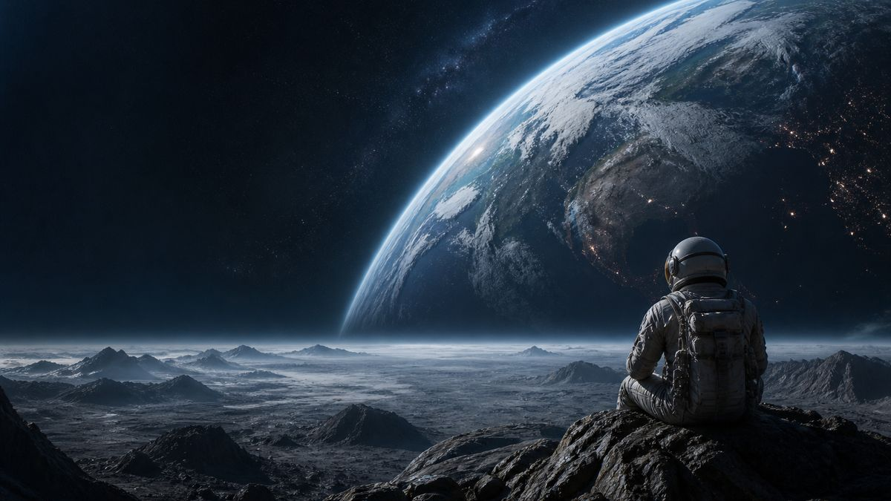
放在一起比最清楚。第一輪的六張長這樣：
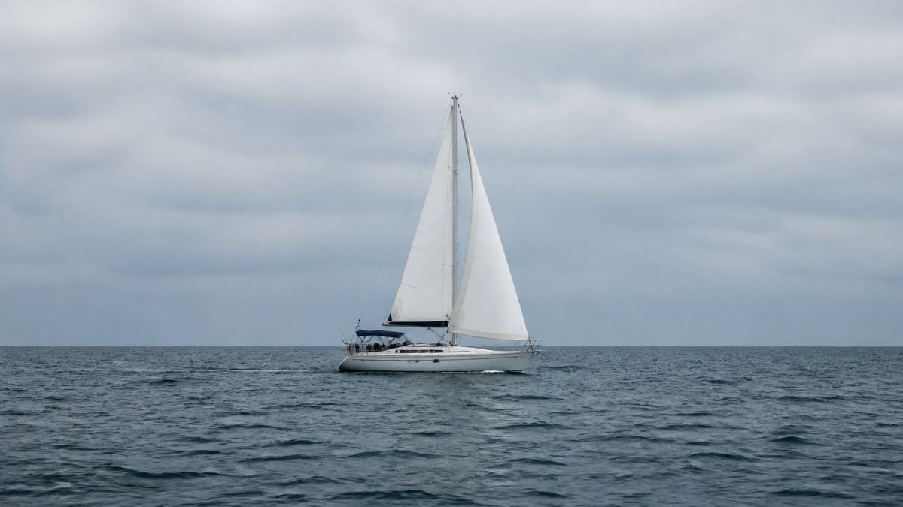
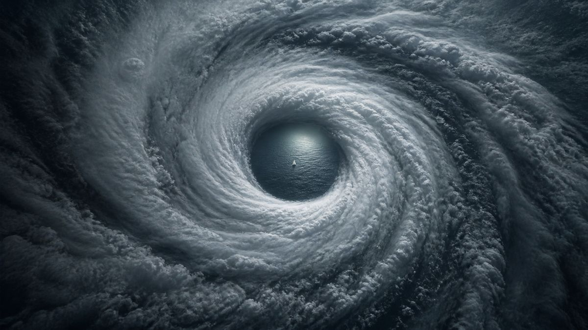
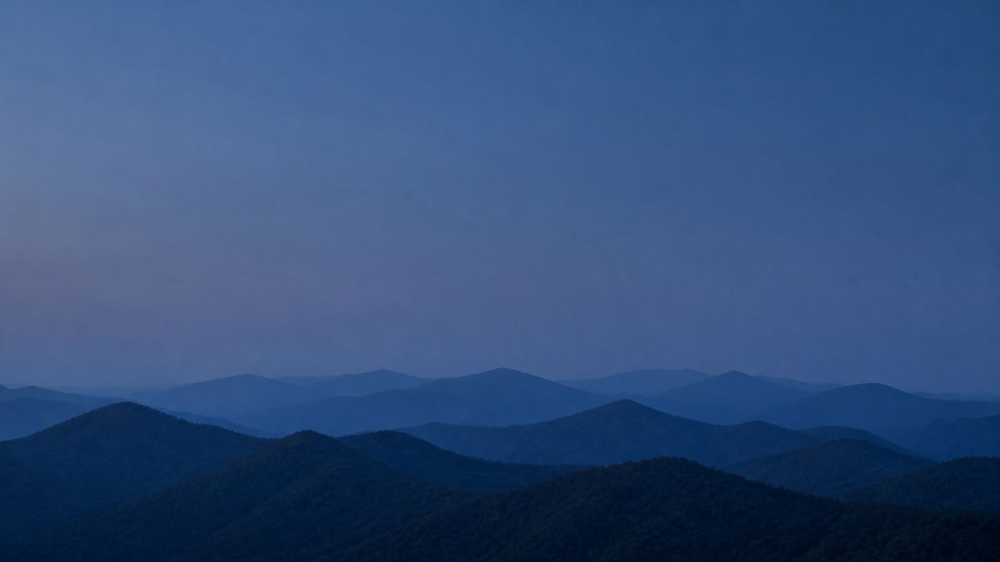
| 兩輪比較 | 可放字區 | 代表區對比度 | 代表區平坦度 std |
|---|---|---|---|
| 第一輪 攝影風（6 張） | 1 到 6 / 6 | 5.25 到 13.61 | 0.0339 到 0.1198 |
| 第二輪 深色超現實（4 張） | 4 到 6 / 6 | 14.39 到 20.66 | 0.0003 到 0.0570 |
暗場留白不只比較好看，量測上也高出一個量級。對比度整體從個位數跳到二十上下，平坦度最好的一張是 0.0003，代表左上那整塊幾乎是純淨的暗場。這很合理：亮天空的雲、水面的波紋都是花紋，暗場沒有。
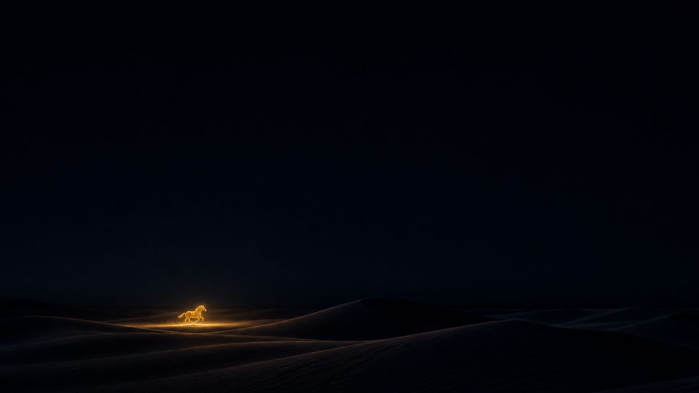
拿發光的馬那組提示詞原封不動跑三次。畫面內容確實每次都不同（馬的位置、沙丘形狀、鏡頭高度都會變），但量測結果幾乎一樣：
| 第一次 | 第二次 | 第三次 | |
|---|---|---|---|
| 可放字區 | 6 / 6 | 6 / 6 | 6 / 6 |
| 代表區 | 右上 | 左上 | 右上 |
| 白字對比 | 20.00 | 20.76 | 20.73 |
結論：隨機的是構圖，不是可用性。只要結構寫死（暗場留白加單一發光主體），每次都放得下字，只是標題該放左上還右上要看那一張。這也是為什麼投影片裡的標題位置是讓程式決定的。
同一組提示詞只換發光顏色，跑了青綠、洋紅、翠綠三種：
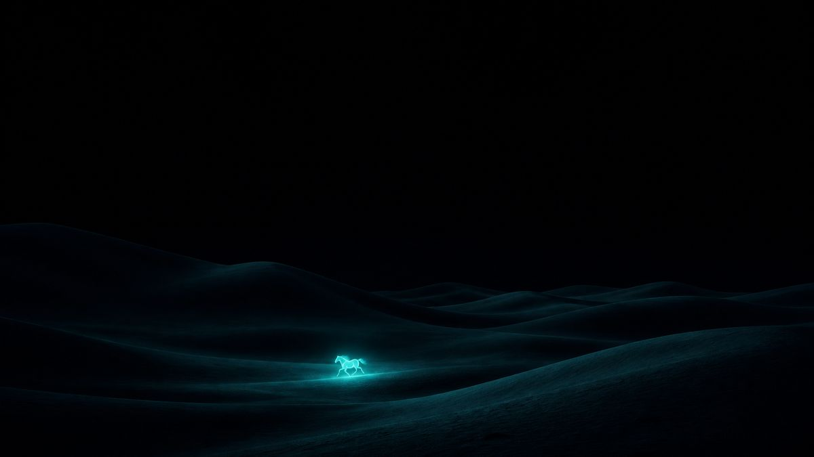
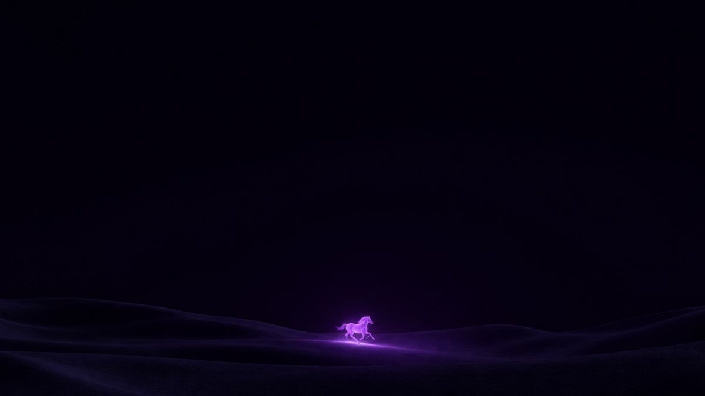
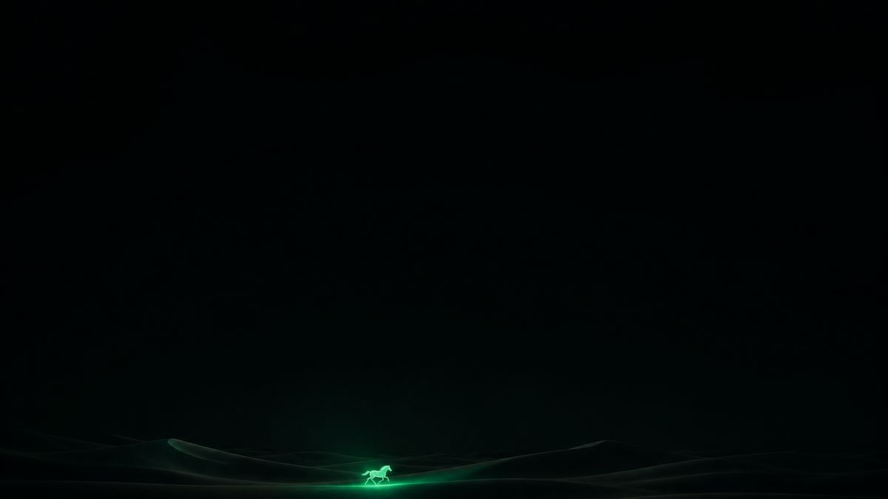
| 暖金（原版） | 青綠 | 洋紅 | 翠綠 | |
|---|---|---|---|---|
| 可放字區 | 6 / 6 | 6 / 6 | 6 / 6 | 6 / 6 |
| 白字對比 | 20.49 | 20.97 | 20.83 | 20.75 |
結論：成立，但有前提。顏色隨便換都好看，是因為結構沒動。換顏色不會動到暗場與發光主體的關係，所以量測分數幾乎不變。這句話的完整版應該是「結構對了以後，配色可以隨便換」。
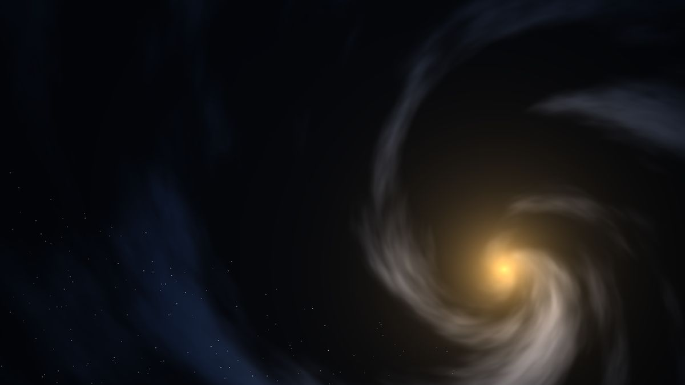
寫了一支，在這裡（會動）。純 WebGL 的 fragment shader，沒有引用任何函式庫，照同一套配方畫：暗場留白佔多數、單一暖色發光核心當視覺中心、核心刻意放右下把左上留給標題。
| 可放字區 | 白字對比 | 平坦度 std | |
|---|---|---|---|
| AI 生圖最好的一張 | 5 / 6 | 20.66 | 0.0023 |
| 程式畫的這一張 | 6 / 6 | 20.30 | 0.0004 |
結論：做得出來，而且平坦度贏過所有 AI 生的圖。原因也很直接：留白區是程式算出來的純色，沒有任何雜訊。代價是它畫不出具象主體，只能做抽象的光與結構。這一段驗的是「程式畫的動態背景過得了同一把尺」，沒有驗 Three.js、Spline、Rive 那幾條個別的路。
來源影片用的是豆包的內建擦除與擴圖。這裡改用 Codex CLI 的 image-edit 模式，先生一張刻意難看的隨手拍大樓（陰天、停滿車、三角錐、垃圾桶、電線橫過天空、路燈桿切過立面），再照原片順序跑三步。
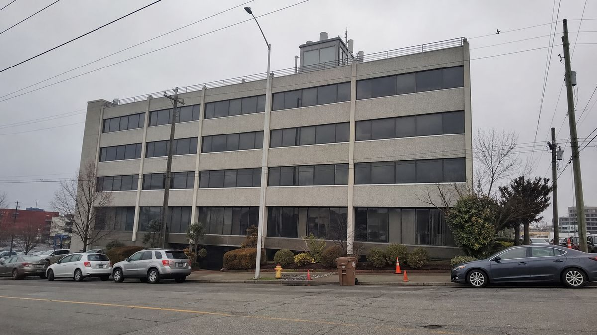
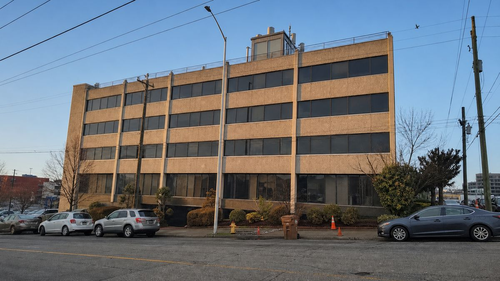
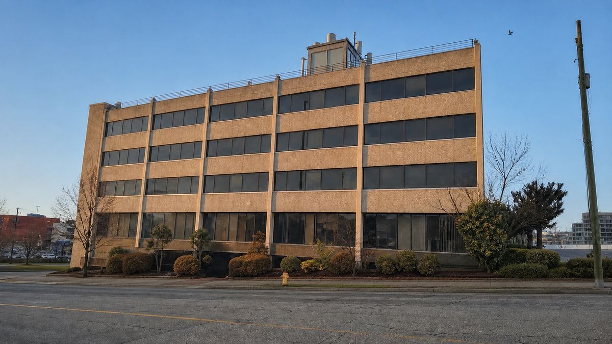
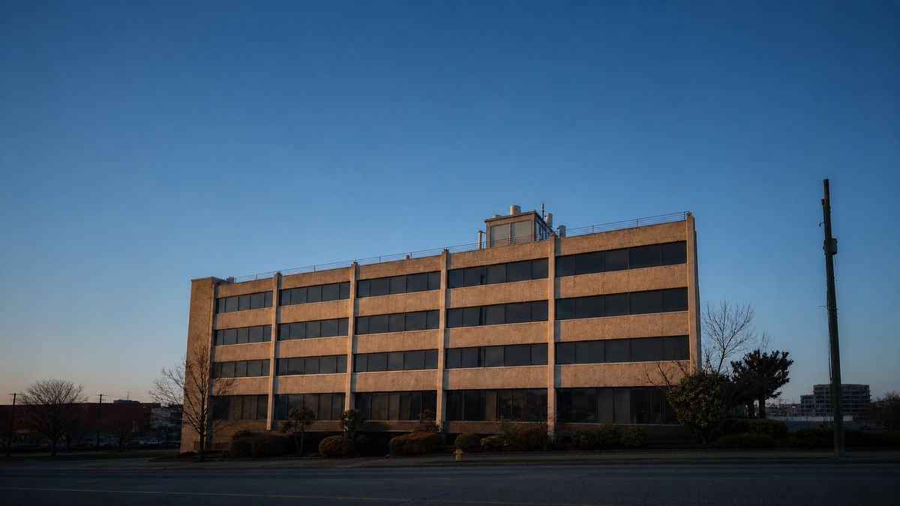
| 步驟 | 可放字區 | 白字對比 | 平坦度 std |
|---|---|---|---|
| 原圖 | 2 / 6 | 7.24 | 0.1101 |
| 換天氣 | 3 / 6 | 8.57 | 0.0986 |
| 去干擾 | 3 / 6 | 8.40 | 0.0970 |
| 壓暗並留白 | 4 / 6 | 8.72 | 0.0858 |
三個結論：
原片教的是圖生影片：靜圖丟進去，加一句「以 XX 為中心，旋轉運鏡」。我們手上能用的是自架在區網那台的 gemini-web（Veo）。查下來有三件事要先講清楚。
/api/capabilities 實測回 video_capable: [2]，四個帳號裡只有第二個做得到。這跟外觀無關，服務是實際打開工具選單看「建立影片」在不在。VideoRequest 只有 prompt 與 timeout 兩個欄位，generate_video() 也沒有把參考檔傳下去。所以現成的路是文生影片，不是圖生影片，做不到「拿第二輪那張圖去動」。_generate_media() 已經有 ref_path 參數而且會把檔案掛上去，生音樂就是走這條。要補圖生影片，是在 generate_video() 把 ref_path 傳下去、在 VideoRequest 加兩個欄位，照生音樂那段抄。這是動到那台機器上的服務，還沒動。文生影片實跑了三次，全部逾時：728 秒、1448 秒、189 秒。所以 Veo 這條目前拿不到成品，而且原因不是它慢。
查出來的原因（有 log 與診斷截圖為證）
描述影片構想」，接著寫「prompt 已送出，開始等待」。進得了影片模式，也找得到輸入框。document.querySelectorAll('video, source, [class*=media]') 回傳空陣列，三次都一樣。所以問題出在打字與送出這一步。Gemini 的「建立影片」介面改版了，現在的輸入列上有「影片」與「橫向 (16:9)」這些新的控制項，服務按舊流程打完字按 Enter，字消失了但訊息沒有送進對話串。
而且服務原本就有防呆，只是判準錯了。它檢查的是「字還留在輸入框裡嗎」，留著就改點送出鈕。新介面上字並沒有留著，所以防呆不會觸發，程式就當作送出成功，然後空等到逾時。正確的判準應該是「對話串裡有沒有出現使用者訊息」。
拿第二輪那兩張靜圖，用 ffmpeg 的 zoompan 做推近與橫移。關鍵在於把所有運鏡參數寫成 1-cos(2*PI*on/N) 的形式：這個式子在第一幀與最後一幀的值相同，所以首尾幀由結構保證一致，循環播放不會跳。
驗法是抽出第一幀與最後一幀逐像素比對平均色差：
| 成品 | 長度 | 檔案大小 | 首尾幀平均色差 |
|---|---|---|---|
| 銀河，緩慢推近 | 12 秒 | 1000 KB | 2.54 / 255 |
| 沙丘，推近加橫移 | 12 秒 | 502 KB | 0.46 / 255 |
剩下那 2.54 是 H.264 在銀河那種密集紋理上的壓縮雜訊，不是畫面跳動。這條路比 AI 的首尾幀同圖更可靠，因為無縫是算出來的，不是模型猜出來的。代價是它只能做推近與平移，做不出真正的環繞。平面的一張圖沒有深度資訊，繞不過去，這正是原片那句「以 XX 為中心，旋轉運鏡」非得靠圖生影片的原因。
第三條路是第 9 節那支 shader，它本身就在連續旋轉，檔案大小是零，任意解析度。要的是「會轉的抽象背景」時它最划算。
把兩支 mp4 放進對照實驗投影片的第 15、16 頁，用 <video autoplay muted loop playsinline>。在 Chrome 實測讀回來的狀態：
會自動播放，前提是 muted。瀏覽器擋的是有聲音的自動播放，背景影片本來就不需要聲音，加上 muted 就不會被擋。playsinline 是給 iOS 用的，少了它 iPhone 會跳全螢幕播放器。
這組實驗的限制
2026 年這個題目非常擠。下面是 2026 年 9 月 1 日從 GitHub 撈出來、篩掉雜訊之後的清單，星數與最後更新日期都是當天的值。
這一類 2026 年才出現，幾乎全部是 2026 年 4 月之後開的 repo，成長速度也最猛。
| Repo | 星 | 授權 | 最後更新 | 特色 |
|---|---|---|---|---|
| zarazhangrui/frontend-slides | 28.5k | MIT | 2026-06-23 | 讓 coding agent 用前端技能直接做網頁投影片，這類的起點 |
| op7418/guizang-ppt-skill | 25.4k | AGPL-3.0 | 2026-08-07 | 雜誌編輯風版式，這一類裡星數最高的 PPT skill |
| alchaincyf/huashu-design | 23.8k | MIT | 2026-08-25 | HTML 原生設計 skill，不限投影片 |
| nicobailon/visual-explainer | 9.6k | MIT | 2026-08-28 | 專做圖解與說明頁，適合技術簡報 |
| lewislulu/html-ppt-skill | 8.2k | MIT | 2026-04-26 | 24 套主題、31 種版式、20 多種動畫；四個月沒動了 |
| chuspeeism/dashi-ppt-skill | 7.1k | AGPL-3.0 | 2026-07-30 | 12 套主題、1020 版式，瀏覽器裡點著改，能匯出可編輯 PPTX |
| ningzimu/codex-ppt-skill | 5.4k | MIT | 2026-07-30 | 走圖片式路線，用生圖模型畫每一頁 |
| zarazhangrui/beautiful-html-templates | 4.4k | MIT | 2026-06-09 | 純版式庫，讓 agent 自己挑，不綁流程 |
| JimLiu/baoyu-design | 3.7k | MIT | 2026-07-30 | 把 Claude Design 那套搬成本機 skill |
| op7418/NanoBanana-PPT-Skills | 3.2k | 未標 | 2026-01-19 | 圖片式加轉場與影片，跟這份研究的背景動畫路線同源 |
| GordenSun/GordenPPTSkill | 3.0k | 自訂 | 2026-06-22 | 17 套中文 PPTX 範本，直接出 Office 檔 |
| ningzimu/image-to-editable-ppt-skill | 2.3k | MIT | 2026-07-28 | 把圖片式簡報與 PDF 逆向成可編輯 PPTX |
| crazyykhllc-bit/CyberPPT | 1.7k | MIT | 2026-07-20 | 顧問風高密度版面，支援 SCR 敘事結構 |
| Binaryify/open-kimi-ppt-skill | 1.6k | 未標 | 2026-08-07 | 非官方 Kimi Slides，附本機瀏覽器編輯器 |
| sunbigfly/ppt-agent-skills | 889 | 自訂 | 2026-06-08 | 把做簡報當軟體工程來管的框架 |
| Gabberflast/academic-pptx-skill | 829 | MIT | 2026-07-14 | 研討會與口試場合專用 |
| ItsssssJack/power-design | 644 | 自訂 | 2026-08-10 | 主打「不要一看就知道是 AI 做的」，20 套編碼風格 |
| archlizheng/frontend-slides-editable | 478 | MIT | 2026-07-01 | 可拖拉縮放的編輯模式 |
| ryanbbrown/revealjs-skill | 403 | MIT | 2026-05-02 | 不自己造輪子，直接讓 agent 產 reveal.js |
| robonuggets/marp-slides | 299 | 未標 | 2026-04-08 | 同上，但走 Marp |
這一類活了十幾年，是上面那些 skill 的地基。挑的時候看兩件事：還有沒有在維護，以及寫的是 HTML 還是 Markdown。
| Repo | 星 | 授權 | 最後更新 | 怎麼寫 |
|---|---|---|---|---|
| hakimel/reveal.js | 72.2k | MIT | 2026-08-24 | HTML；這個領域的標準答案，2011 年至今還在動 |
| slidevjs/slidev | 48.4k | MIT | 2026-08-25 | Markdown 加 Vue，開發者取向 |
| impress/impress.js | 38.2k | MIT | 2026-07-23 | HTML；CSS3 位移縮放的無限畫布 |
| marp-team/marp | 12.4k | MIT | 2026-07-29 | Markdown；有 CLI 與 VS Code 外掛 |
| webpro/reveal-md | 3.9k | MIT | 2026-02-14 | Markdown 直接吐 reveal.js |
| astefanutti/decktape | 2.4k | MIT | 2026-07-13 | 把網頁簡報轉成 PDF 的工具，本身不是框架 |
| inspire-js/inspire.js | 1.8k | MIT | 2026-06-10 | 極輕量，可拆可改 |
| Repo | 星 | 授權 | 最後更新 | 做什麼 |
|---|---|---|---|---|
| nexu-io/open-design | 93.1k | Apache-2.0 | 2026-08-31 | Claude Design 的開源版本，這批裡星數最高 |
| hugohe3/ppt-master | 50.7k | MIT | 2026-08-31 | 文件或題目直接變原生 PowerPoint |
| Anionex/banana-slides | 15.5k | AGPL-3.0 | 2026-08-31 | 可以餵任意範本圖片，自己解析風格 |
| nexu-io/html-anything | 8.6k | Apache-2.0 | 2026-08-23 | 本機 agent 寫 HTML、人在旁邊改 |
| sligter/LandPPT | 3.6k | 自訂 | 2026-08-02 | 可接多家模型的簡報生成平台 |
| arcsin1/oh-my-ppt | 1.9k | Apache-2.0 | 2026-08-27 | 簡報、課程、故事都能生 |
| Repo | 星 | 授權 | 最後更新 | 做什麼 |
|---|---|---|---|---|
| gitbrent/PptxGenJS | 6.1k | MIT | 2025-11-28 | 用 JavaScript 產 PPTX，瀏覽器與 Node 都能跑 |
| docxtemplater | 3.6k | 自訂 | 2026-08-04 | 用範本填資料產 docx、pptx、xlsx |
| Ziv-Barber/officegen | 2.7k | MIT | 2024-04-30 | 老牌 Office Open XML 產生器 |
這台機器上裝著兩套，用途不重疊：自己寫的 slide-deck-skill，跟裝來對照的 dashi-ppt-skill。
自製的理由跟版面好不好看無關。上面那二十幾個 skill 幾乎都在解同一個問題：怎麼把內容變成好看的頁面。而站著講一場九十分鐘直播的人，卡住的地方在別的地方。
順序要先講清楚：正確的做法是先跟 AI 討論出需求，再從需求開出功能規格，最後才做。下面這張表是倒著給你看的，因為功能早就做完了，它的用途是當證據，讓你檢查每一條功能背後都真的有一次需求。照著這張表從右往左推，方向是錯的。
| 當初的需求（直播現場真的發生的事） | 後來才做出來的功能 |
|---|---|
| 要 demo 真站台，截圖是死的 | 單頁內嵌 iframe，按了才載，不是一翻到就連線 |
| 直播網路會出事，demo 掛掉就冷場 | 每個 demo 配一支預錄影片，按一下就切過去 |
| 觀眾用手機看串流，字會糊 | 單頁滿版、clamp() 字級、一頁一件事 |
| 九十分鐘的量記不住，念稿又很乾 | 講稿備註只出現在主控台，投影機那邊看不到 |
| 一定會超時，0826 那場規劃 90 分講了 169 分 | PACE 每頁目標時間，超時計時器變紅 |
| 站台前離筆電遠 | 手機掃 QR 當遙控器 |
| 改完不知道有沒有改壞 | deck-tools 自動翻頁、抓排版溢出、抓 JS 錯誤 |
這七條裡面，沒有一條是「我想要更好看的版式」。這就是為什麼挑不到現成的：這一批 skill 都在解排版，我們卡的是講者現場。
同一套需求換個場合會得出完全不同的功能清單。這也是自製的另一個理由，因為現成的 skill 沒辦法讓你砍功能。
| 場合 | 需要什麼 |
|---|---|
| 線上直播 | 內嵌 iframe、備援影片、節奏計時 |
| 會議室提案 | 能被打斷跳頁、有 appendix 深水區、印得出來發下去 |
| 交出去自己看 | 不需要備註，每頁要能自己站得住，要 PPTX 讓對方改 |
| 錄影課程 | 要章節標記，字幕交給後製 |
2026 年 8 月 31 日拿同一份發包單實跑過兩種場合，只有場合與時間答得不一樣，結果差很多：會議室那份砍到八頁、deck.css 少了 74 行、QR 那支檔案直接刪掉；線上直播那份留了十六頁與 iframe。最值得記的一列是手機遙控：兩份都砍掉。線上直播是螢幕分享，人坐在電腦前，遙控器是給你離開筆電、站在實體舞台上用的。
先講一件查證出來的事：dashi-ppt-skill 的作者就是這兩支影片的作者。模板檔
project/assets/template-swiss.html 第 1943 行的作者區塊寫著
@大师的AI小灶，並連到同一個 GitHub 帳號與其抖音、小紅書、Bilibili。
所以這份研究拆的方法，跟這個七千顆星的 skill 出自同一人。
兩套都 clone 下來翻過原始碼，解的不是同一個問題。
| slide-deck-skill（自製） | dashi-ppt-skill | |
|---|---|---|
| 為誰設計 | 站著講的人 | 交出去給人看的報告 |
| 講者支援 | 雙螢幕主控台、講稿備註、節奏計時、手機遙控 | 都沒有，見下方查證 |
| 視覺 | 一套 CSS，每場從被講的專案身上取色 | 12 套主題、1020 版式、8576 個可調控件 |
| 改稿 | 改 HTML 原始碼 | 瀏覽器裡點文字就地改、滑桿換版式 |
| 出檔 | 16:9 PDF 與 A4 講義 | HTML 離線包、PDF、可編輯 PPTX |
| 驗收 | deck-tools 機器檢查 | 明講不做截圖審美精修 |
| 體積 | 1.5 MB | 127 MB（產物只帶其中一支主題 runtime，約 0.7 MB） |
| 授權 | MIT | AGPL-3.0 |
沒有。它畫面上那個「演示控制台」是編輯與匯出工具列，跟講者無關。它提供的是：播放預覽、 匯出 HTML 離線包與 PDF 與 PPTX、重置、切語言、切明暗、左側縮圖目錄、預覽風格切換、 十種換頁動畫、以及右側的可調控件面板。
查法與結果：
speakernote、presenternote、演讲者备注、讲稿：在模板、SKILL.md、README、版式清單裡零命中。搜到的「備註」全部是表格版式的欄位名，例如「最右側的備註說明列」。window.open、BroadcastChannel、requestPresent：在模板與 scripts/ 裡零命中，所以沒有第二視窗或雙螢幕同步機制。pace 有命中，但逐一看過是字型名 Space Grotesk 的子字串，沒有計時功能。所以你的判斷是對的：它是網頁內直接改，但沒有講者的講稿模式。
HTML 產物會，PDF 與 PPTX 不會。
src/renderDeck.jsx 第 152 行每次算繪都會產生 assets/imported-theme-runtime.js，
scripts/validate-swiss-deck.mjs 第 32 行還會檢查這個檔存在。所以任何一份 HTML 產物一定帶著它。dist/theme-runtime/ 十二支合計 19 MB，
單支介於 0.70 MB 到 0.77 MB 之間，一份 deck 只會帶用到的那一支。
（順帶修正一個流傳的說法：那 19 MB 是十二套主題的總和，不是單份產物的體積。）handlePdfExport 呼叫 exportScreenshotPdfFromUrl），
PPTX 走另一條 html-deck-to-pptx 管線，兩者都是算繪結果，裡面沒有 JS。可以照著做的結論：拿 dashi 做完，交 PDF 或 PPTX 給對方，不會碰到 AGPL 的散布條款。 把匯出的 HTML 離線包放上公開網站或商用，就等於連同它的 runtime 一起散布，AGPL-3.0 的條款要自己看一眼 （AGPL 的重點在第 13 條：透過網路提供服務也算散布，要提供對應原始碼）。上游 LICENSE 檔已確認是 AGPL-3.0， 本機安裝的 skill 目錄裡沒有帶 LICENSE 檔。
兩個都留著。要交報告、要 PPTX 檔、對方要自己改字，dashi 贏；要上台講、要備註計時遙控、要當場內嵌真站台，自製這套贏。規格是自己的資產，乙方可以換。
選題材
寫提示詞
驗收出圖
轉動態
這一節是給要拿這份東西上台的人看的：哪幾句話有證據撐、哪幾句還只是轉述。
| 宣稱 | 怎麼驗的 | 結果 |
|---|---|---|
| 提示詞四段結構有用 | 同主體 A/B 各一張，量可放字區 | 1/6 到 3/6，成立 |
| 尺度失衡讓畫面更有張力 | 同上 | 張力成立，但可放字區從 4/6 掉到 3/6，有代價 |
| 加一個發光元素就有視覺中心 | 同上 | 過關區不變、對比從 10.53 到 13.61，沒有代價 |
| 第 4 集封面的真正配方 | 逐幀讀出原片畫面上打出來的完整提示詞 | 暗場留白、主體比環境亮、前景遠景分寫，全部落實在第二輪 |
| 暗場留白比亮天空好用 | 兩輪十張一起量 | 對比 5.25 到 13.61 對上 14.39 到 20.66，差一個量級 |
| 生圖有隨機性，方法會不會失效 | 同一提示詞跑三次 | 構圖每次不同，可放字區都是 6/6，可用性穩定 |
| 配色可以隨便換 | 只換發光顏色跑三色 | 四種顏色全部 6/6、對比 20.49 到 20.97，結構不動時成立 |
| 用程式也能畫出能放字的背景 | 自己寫一支純 WebGL shader 再量 | 6/6、對比 20.30、平坦度 0.0004，比所有 AI 生的圖乾淨 |
| 修丑圖三步換掉豆包還成立嗎 | 生一張爛圖再跑三步 | 2/6 修到 4/6。換天氣與壓暗可複製；去干擾沒做乾淨、擴圖變成整張重畫 |
| dashi-ppt-skill 有沒有講者主控台 | 翻原始碼逐項搜關鍵字 | 沒有。詳見第 11 節的查證一 |
| 從靜圖做無縫循環的運鏡 | ffmpeg 把運鏡寫成 1-cos 形式，再抽首尾幀比對 | 平均色差 0.46 與 2.54 / 255，由結構保證接得上 |
| 背景影片能不能在投影片裡自動播放 | 嵌進投影片，讀瀏覽器回報的播放狀態 | 會，前提是 muted；播放時間確實在前進 |
| 自架的 Veo 能不能產出背景影片 | 讀 API 與原始碼、實跑三次、拉 log 與診斷截圖 | 不能。API 不吃圖，而且文生影片也壞了：提示詞根本沒送進對話串，服務的防呆判準錯了 |
| dashi 的產物會不會內嵌 AGPL runtime | 翻算繪與匯出的原始碼 | HTML 會、PDF 與 PPTX 不會。詳見查證二 |
下一步有兩件，都要動到區網那台的服務：一是把送出的防呆判準從「字還在不在輸入框」改成「對話串有沒有出現使用者訊息」，這是三次逾時的直接原因；二是把 ref_path 從 _generate_media() 接到 generate_video()，才有真正的圖生影片。在那之前，台上能給的答案是：推近與平移用 ffmpeg 做，無縫循環比 AI 可靠；真正的環繞運鏡目前做不到。
全部內容整理自下列公開素材，方法與案例的著作權屬於原作者「大师的AI小灶」。
第 10 節的六張圖與量測程式在 experiments/，提示詞、verify.py 與 verify-result.json 都在裡面，可以自己重跑。第 11 節的清單是 2026 年 9 月 1 日用 GitHub search API 撈十四組關鍵字、去重後得到 289 個 repo，人工篩掉同名雜訊（Steam Deck、Anki 牌組、deck.gl 之類）再逐一取回精確資料，星數與更新日期都是當天的值。